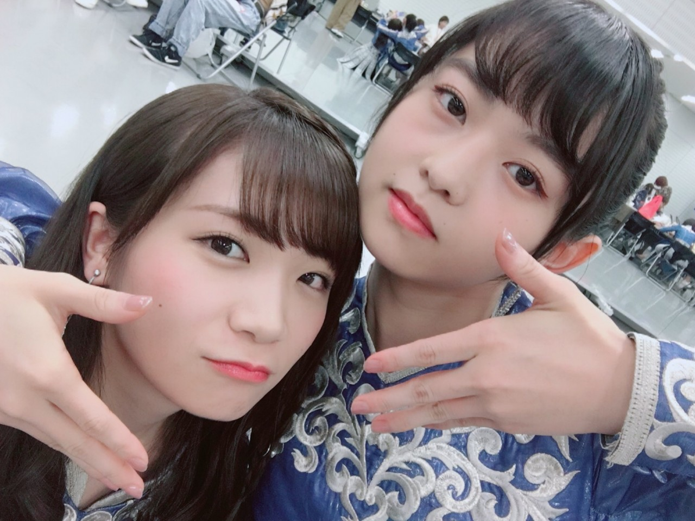
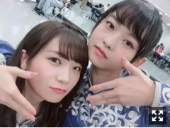
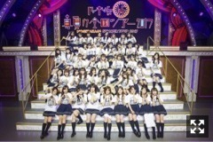
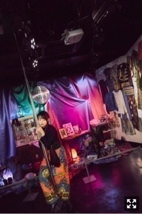

本日、10月11日は19thシングル
『いつかできるから今日できる』
発売日です〜
特典映像はあさひなぐプロジェクトのこと。
どうぞよろしくお願いします。

先日はじめての新潟公演で
今回の地方ツアーは終了しました。
一ヶ月空いたけど、
久しぶり動けてよかったです。
来てくださったみなさん
ありがとうございました！
お米が美味しい！
残すは東京ドーム！
今月発売のMdN、MmC対談のお相手は
映像監督の柳沢翔さんです！
偉大なる初代監督。
忙しい中合間を縫って
話をしてくださいました。
この対談後にショートフィルムの
打ち合わせをしたりしてました。
『トイ』かなり刺激的。
完成した作品を制作チームと
ギャラリーで一緒に鑑賞して
すごく幸せな空間だねって言ってくれて
胸がいっぱいでした。
みんなに見てほしい。
今日は次号の取材の日。
さあ誰でしょう！お楽しみに。

5日から渋谷GALLERY X BY PARCOで
絶賛開催中の個展
《伊藤万理華の脳内博覧会》
後半戦突入しました。
グッズが想定外の売れ行きみたいです。
私もびっくりしてます。。
現場で手に入らなかったみなさん、
個展に行けないみなさんにも
どうにか手に渡ってほしいと考えています！
暫しお待ちを、、！
新潟ライブでメイクさんと衣装さんが
トートバッグとＴシャツを
普通に使ってくれたよーーーー
普段から一緒に活動してて
お世話になっている方に見てもらえるのって
嬉しいよなあ
メンバーも来てくれて嬉しいいかった
私物展示してるから
心なしか部屋がすっきりしてて
それもそれでいいんだけど、
やっぱり集めたコレクションを
定期的に眺めないと落ち着かない、、
落ち着かない日々、、、
↑個展関連の写真とかもろもろ更新してます。

まりか